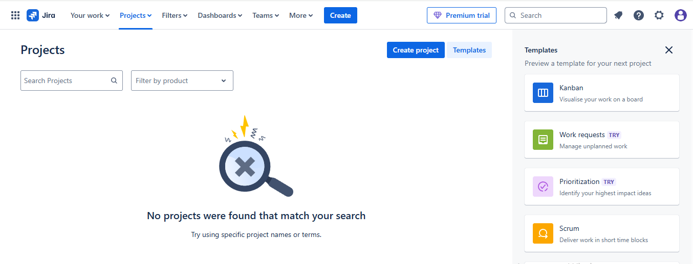
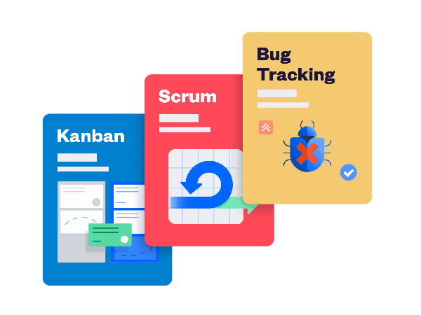
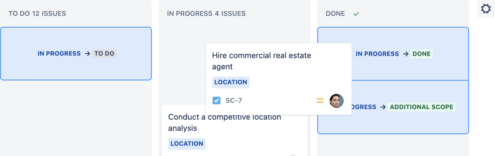

Jira and Project Management Tools
Astapenko Michael
What is Jira
- A program for teamwork
- Task and project management
- Program popular all over the world
Where Jira is used
- IT companies
- Marketing
- Construction
- Education
Jira's Main Features

- Creating tasks
- Planning work
- Assigning people
- Checking task status
- Reporting
Example of creating a task
Step 1: Create a Project
Log in to your Jira site. From the top navigation bar, select the Projects dropdown and click Create project.
Step 2: Choose a template
There are dozens of Jira templates, each designed to help your team get started quickly and efficiently. Three of them are currently designed specifically for software development teams.
Step 3: Invite teammates
Step 4: Set up columns
A Jira board displays a collection of issues in columns. Each column represents a stage in your team's work. While there are many things you can customize on your board, we recommend that you only set up columns at this stage. When preparing a new Jira project, it's important that your board reflects the way your team works.
1) Go to your board. Select the button with three dots (•••) in the
upper right corner and click Configure board.
2) Do the necessary actions: add new columns, as well as rename, delete or move existing
ones.
Step 5: Create a task
Issues are the building blocks of your Jira project. An issue can represent a story, epic, bug,
planned feature, or any other task within the project.
Select Create from the top navigation bar. The issue will appear in the backlog or project
board.
Step 6: Connect your tools
- Click the gear in the right corner of the top navigation bar and select Apps.
- Click Find new apps.
- Search for an app name or select a category.
- Follow the prompts to install or purchase the app, or start a free trial.
Step 7: Start working
Now that your team is connected to your Jira site, you can work together and track progress together. If you're working on a Scrum project, you'll need to create and start a sprint to track progress. If you're working on a Kanban project, you can view progress on a board. To keep track of work items, move items from one column to another as they move through your team's workflow.
Benefits of Jira
- Simplifies teamwork
- Helps to see progress
- Speeds up project delivery
- Easy integration with other systems